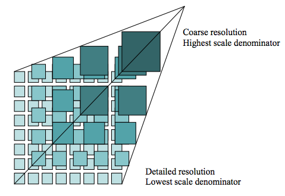

Introduction
Overview
NASA's Global Imagery Browse Services (GIBS) system provides visualizations of NASA Earth Science observations through standardized web services. These services deliver global, full-resolution visualizations of satellite data to users in a highly responsive manner, enabling visual discovery of scientific phenomena, supporting timely decision-making for natural hazards, educating the next generation of scientists, and making imagery of the planet more accessible to the media and public. Browse all of these visualizations through our Worldview application.
GIBS visualization layers are based on satellite data that has been transformed into pre-generated visualizations stored as a tile pyramid (see figure below). GIBS coordinates with NASA data centers and science teams to regularly ingest visualizations based on remotely sensed satellite data. By processing, storing, and serving these visualizations as pre-generated tiles, GIBS can enable highly responsive access to its visualizations. See here for more background on how tiled web maps work.
1
GIBS services are built atop the open source OnEarth software and Meta Raster Format (MRF) format. Visit those projects on GitHub to learn more or become a contributor.
More Information
Visit the following content areas within this documentation site to learn more about GIBS visualizations and how to integrate them into your applications or utilities.
- Available Visualizations - Learn more about what visualizations are available to you
- Access Basics - Learn the basics about accessing visualizations through GIBS services
- Access Advanced Topics - Take a deeper dive into advanced topics related to accessing and interpreting GIBS visualizations
- Accessing via GIS Applications - Learn how to access GIBS imagery via Geographic Information System (GIS) applications
- Accessing via Map Libraries and Scripts - Learn how to access GIBS imagery from interactive mapping libraries and GDAL-based scripts
- Accessing via Python - Python examples of accessing GIBS imagery (also downloadable as a Jupyter Notebook)
Contact us at earthdata-support@nasa.gov if you have additional questions.
You may also visit the GIBS landing page for high-level information and the GIBS blog for periodic updates on new Worldview features, GIBS service enhancements, and visualization layers.
Data Use Guidance and Acknowledgements
NASA promotes full and open sharing of data. We ask that users who make use of GIBS in their clients or when referencing it in written or oral presentations to add the following acknowledgment:
We acknowledge the use of imagery provided by services from NASA's Global Imagery Browse Services (GIBS), part of NASA's Earth Science Data and Information System (ESDIS).
-
A tile pyramid (from OGC WMTS 1.0.0 specification) ↩